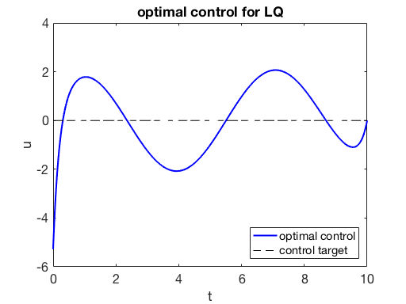
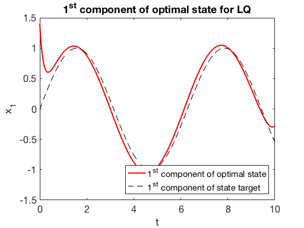
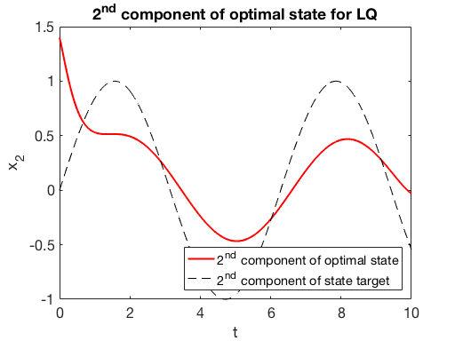

In this short tutorial, we explain how to use Riccati’s theory to solve an LQ control problem with targets.
We consider the optimal control problem:
where:
In the above control problem, $A \in M_{n \times n}$, $B \in M_{n \times m}$, $C \in M_{r\times n}$ and $D\in M_{r\times n}$. The control $u:[0,T]\longrightarrow R^m$, while the state $x:[0,T]\longrightarrow R^n$. The control target is $q\in C^1([0,T];R^m)$ and the state target is $z\in C^1([0,T];R^n)$. $\beta\geq 0$ and $\gamma\geq 0$ are positive parameters.
By the Direct Methods in the Calculus of Variations and strict convexity, the above problem admits an unique optimal control $u^T$. The corresponding optimal state is denoted by $x^T$.
We compute the optimal pair (optimal control, optimal state) by using the well-known Riccati’s theory (see, for instance, [1, Lemma 2.6] and [2, section 4.3]).
For further details regarding the algorithm, we refer to RiccatiAlgorithm
Take
A=[2,-1;-1,2];
B=[1;0];
C=eye(2);
D=zeros(2,2);
beta=26;
gamma=0;
x0=[1.4;1.4];
q=@(t)0;
z=@(t)[sin(t);sin(t)];
T=10;
Nt=1000;
We solve an LQ problem with the above data.
[ uopt, x] = lqtarget( A,B,C,D,beta, gamma, q, z, x0,T,Nt );



Since the parameter $\beta$ is large enough and the control acts only on the first component of first equation
-
the first component of the state is close to the target;
-
the second component of the state is less close to the target;
-
the control is far from its target.
The algorithm described in this guide can be employed to test the fulfillment of the turnpike property (see, for instance, 1 and 3). In agreement with the theory, the turnpike effect is evident if:
-
the targets are constants;
-
$(A,B)$ is controllable;
-
$(A,C)$ is observable, $\beta>0$ and $\gamma=0$;
-
the time horizon $T$ is large enough.